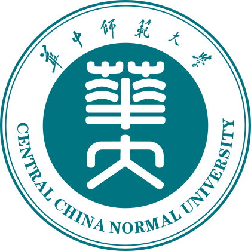
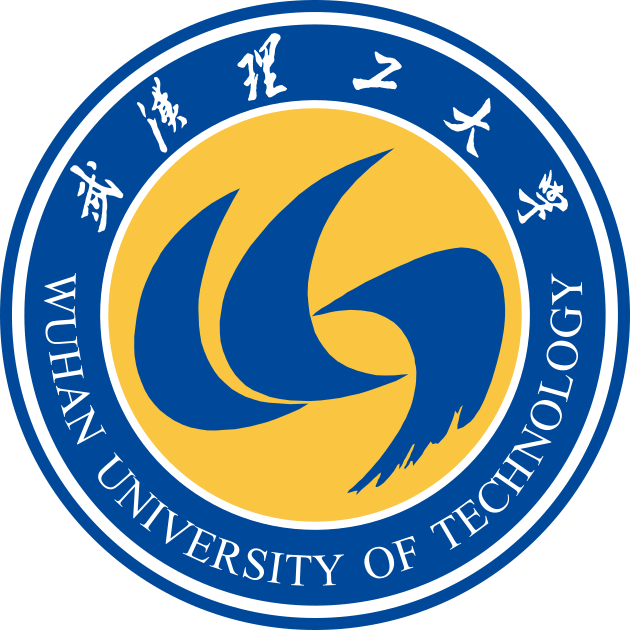

Working Experience

Postdoc, Central China Normal University
Wuhan, China
July 2024 - Current
Co-supervisor: Prof. Weiyao Ke (柯伟尧)
Postdoctoral Research Fellow, Institute of Modern Physics, Chinese Academy of Sciences
Huizhou & Lanzhou, China
July 2023 - June 2024
Co-supervisor: Prof. Yi Yin (尹伊), Dr. Yuxiang Zhao (赵宇翔)
Teaching Assistant, Tsinghua University
Beijing, China
September 2018 - June 2022
Education
Ph. D. in Physics, Tsinghua University
Beijing, China
September 2018 - June 2023
Supervisor: Prof. Lianyi He (何联毅)

B.S. in Optoelectronic Information Science and Engineering, Wuhan University of Technology
Wuhan, China
September 2014 - June 2018
Supervisor: Prof. Yanli Li (李艳丽)